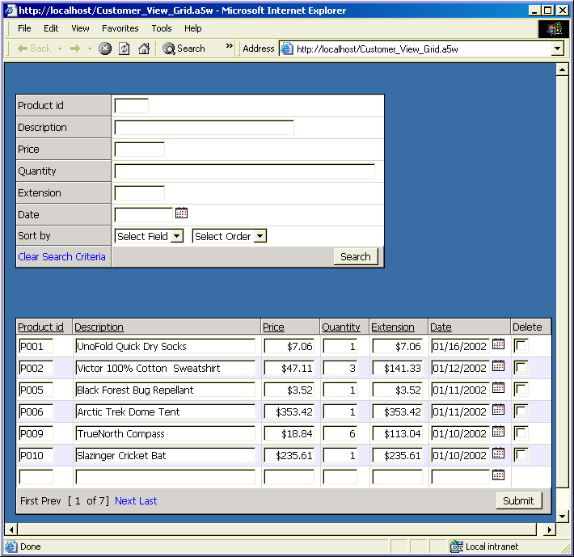
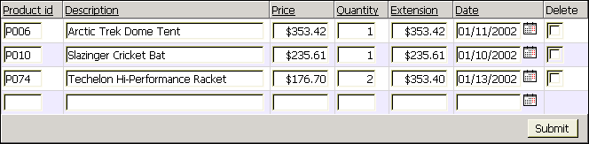
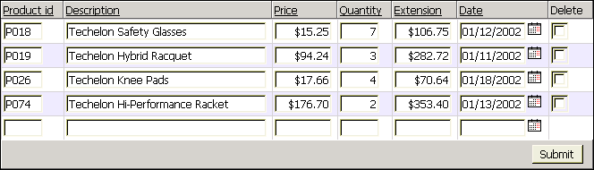
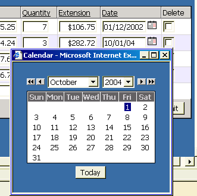

Displaying Multiple Tables with a View
 Note : The Displaying Multiple Tables with a View topic describes a technique available to Alpha Five database users. A different kind of view is available
in SQL Databases that can be used for a similar purpose, except that SQL views can reflect one-to-many relationships.
Note : The Displaying Multiple Tables with a View topic describes a technique available to Alpha Five database users. A different kind of view is available
in SQL Databases that can be used for a similar purpose, except that SQL views can reflect one-to-many relationships.
The Web Component Builder provides two methods for displaying data from multiple tables. The View technique combines fields from 2 or more tables in one-to-one relationships.
Create a new grid based on the AlphaSports database.
Display the Component Type page.
Leave the Grid Layout selection as "Tabular". This produces a multi-record view, similar to a conventional Alpha Five browse, with field labels at the tops or bottoms of columns.
Select the Updateable radio button.
Check the Grid contains a 'Search' part check box. This is an optional form that allows you to query your table and return matching records.
Display the Grid > Data Source page.
Select either the Alpha Five .dbf Tables or ADO/ODBC/Access radio buttons. The ADO/ODBC/Access button allows you to retrieve your data from Microsoft Access or a database that supports the ADO or ODBC interface standards.
Selecting the Records to Display
If you selected Alpha Five .dbf Tables :
Display the Grid > Query (DBF) page.
Select the View radio button.
Click Tables in View to display the Define Join dialog box.
Click Add Table to display the Add Table dialog box.
Select "Product" from the Tables list and click OK .
Select the Product table in the Define Join window and click Add Table to display the Add Table dialog box.
Select "Invoice_Items" from the Tables list and click OK .
Select the Invoice_Items table in the Define Join window and click Add Table to display the Add Table dialog box.
Select "Invoice_Header" from the Tables list and click OK .
Click OK to exit from the Define Join dialog box.
If you selected ADO/ODBC/Access :
Display the Grid > Query (ADO) page.
Select the SQL Select Statement radio button.
Click Edit SQL to display the SQL Builder dialog box.
Click Tables in Query to display the Add Table dialog box.
Select "Invoice_Header" from the Tables list and click OK .
Select "Invoice_Items" from the Tables list and click OK .
Select "Product" from the Tables list and click OK > OK.
Click Fields in Query to display the Select Fields in Query dialog.
Select the "Date" field and click
 .
.Select the "Invoice_Items" table from the drop down list.
Select the "Price", "Quantity", and "Extension" fields, and click
.Select the "Product" table from the drop down list.
Select the "Product_Id" and "Description" fields, and click
.Click OK > OK to return to the Grid Builder.
Selecting the Fields to Display
Click Fields in View to display the Select Fields in View dialog box.
Add Product table fields. Select the "Product_Id" and "Description" fields, and click
.Add Invoice_Items table fields. Select the "Price", "Quantity", and "Extension" fields, and click
.Add an Invoice_Header table field. Select the "Date" field and click
.Click OK to exit from the Select Fields in View dialog box.
In the Filter field enter the expression Quantity > 0.
Leave the Order field empty.
Leave the Ascending radio button selected.
Leave the Unique records only check box cleared.
Leave the Read only check box cleared.
Display the Grid > Fields page.
Leave the Grid is editable check box unchanged.
In the Available Fields list select "Product_Id" through "Date" and click
.
Select the "Product_Id" field in the Selected Fields list. Set the Textbox Properties > Size field to 4.
Select the "Description" field in the Selected Fields list. Set the Textbox Properties > Size field to 40.
Select the "Price" field in the Selected Fields list.
Click the
 button in the Display Settings > Display Format field to display the Display Format dialog box.
button in the Display Settings > Display Format field to display the Display Format dialog box.Click Select Pre-Defined Format, select a currency format, and click OK > OK.
Set the Textbox Properties > Size field to 8.
Select the "Quantity" field in the Selected Fields list. Set the Textbox Properties > Size field to 4.
Select the "Extension" field in the Selected Fields list.
Click the
button in the Display Settings > Display Format field to display the Display Format dialog box.Click Select Pre-Defined Format, select a currency format, and click OK > OK.
Set the Textbox Properties > Size field to 8.
Select the "Date" field in the Selected Fields list.
Click the
button in the Display Settings > Display Format field to display the Display Format dialog box.Click Select Pre-Defined Format, select a date format, and click OK > OK.
Set the Textbox Properties > Size field to 10.
Display the Grid > Properties page.
Click
 to display the Select style dialog.
to display the Select style dialog.Select "WinClassic" click OK.
Set the Layout Options > Rows of data field to 6.
Click the Layout Options menu to collapse it.
Check the Shading and Dividers > Alternate row shading check box.
Select each field in the Selected Fields list to display its Field Properties dialog. Refer to Setting Grid Control Properties.
Click the Shading and Dividers menu to collapse it.
Click the Column Titles and Sorting Options menu to collapse it.
Click the
button in the Record Navigator > Record navigator layout field to display the Record Navigator Designer dialog box. You can modify the default navigator styles or create new navigator styles.Select the Pre-Defined Format and click OK.
The update settings control how your grid behaves when a user adds, deletes, or updates a record.
Display the Update > Settings page.
Change the Permissions > Number of new record rows field to 1.
The Search form allows you to find records using complete or partial values in one or more fields. You can sort the results on any field in the grid. You can display any set of fields from the table.
Display the Search > Fields page.
Select all fields in the Available Fields list and click
 .
.Display the Search > Properties page.
Clear the Records per Page Listbox Options > Include "Records per Page' listbox check box. This option allows the user to specify how many records to return per page.
The first stage of previewing your work is to create a page onto which to place the new component.
Click
 to preserve your work. Name it "AlphaSports_Grid_4".
to preserve your work. Name it "AlphaSports_Grid_4".Click Close to return to the Web Projects Control Panel .
Click
 on the toolbar.
on the toolbar.Select Alpha Five Web Page > OK to open the HTML Editor .
Click File > Save As. Name the page "AlphaSports_Page_4" and click OK.
The next stage is to place the component on the page.
Click
 Insert Component to display the Insert Component dialog.
Insert Component to display the Insert Component dialog.Click Select to display the Select Component dialog.
Select "AlphaSports_Grid_4" and click OK.
Change the component Alias to "ACG4" and click OK.
Click
and close the HTML Editor.Next, publish the files to the local webroot. The local webroot is presumably the location where you will test your website. In most cases you will create a second profile (in this case "AlphaSports") where you will publish your finished public website.
Display the A5W Pages page of the Web Projects Control Panel.
Right click "AlphaSports_Grid_4" and select Publish (local webroot) and open. You should see something like the following.

Finally, see how the component works. Enter ">100" into the Price field and click Search. You should see something like this.

Click Clear Search Criteria, enter "techelon" into the Description field and click Search.

Select a record and click the calendar icon next to its date field.

See Also